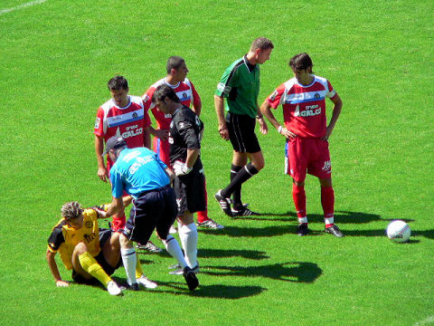
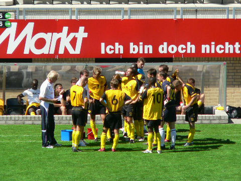
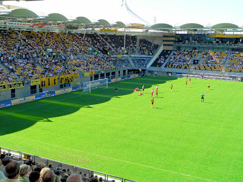

|
Roda JC - Getafe (0-3) 5 augustus 2007
|
De spelers treden aan voor 4.500 toeschouwers op de heetste dag van het jaar.
Roda speelt nog steeds zonder de geblesseerden Oper, Cissé en Lachambre.

Vandamme valt na 20 minuten geblesseerd uit.
Van Boekel trekt de gele kaart voor Kah.
Het debuut van Lamah die invalt voor Vandamme.
Extra drinkpauze op de tribune.

Extra drinkpauze in het veld.
Alweer een gele kaart.
Na een handsbal van Kah benut Hernandez de toegekende strafschop: 0-1, (41').
Vlak voor rust krijgt Roda een kansje uit een hoekschop.
In de tweede helft krijgt Getafe weer een penalty. Deze gaat echter op de paal.
Op de westtribune was er enkele minuten lichte agitatie.
Kennelijk ontstond de opwinding nadat een groepje verveelde supporters met bier
is
gaan gooien.
Prachtig in de hoek gekrulde vrije trap van Leites: 0-2, (64'). Links met nummer
18
staat invaller Tioté, een van de twee nieuwe huurlingen.

In de 76 min. scoort Santamaria 0-3.
Vrije trap Roda die door De Jong hoog wordt overgeschoten. De niet echt tot de
verbeelding sprekende wedstrijd eindigt 0-3. Aan de opstelling
zal nog volop gesleuteld worden.
Castro (Tyton), Kah (Van Kouwen), Saeijs, De Fauw, De
Jong, Meeuwis, Bodor (Tioté), Janssen,
Sibum, Van Tornhout (Bouchiba), Vandamme ( Lamah)
© Koempels Pleasure Dome
|